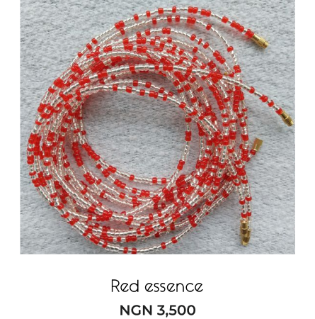
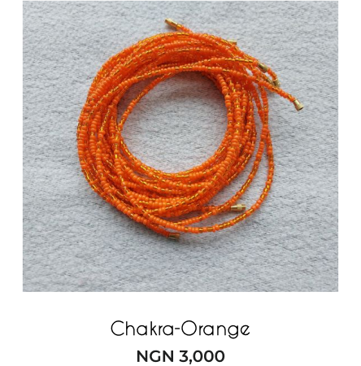
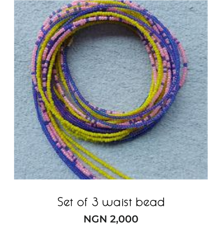
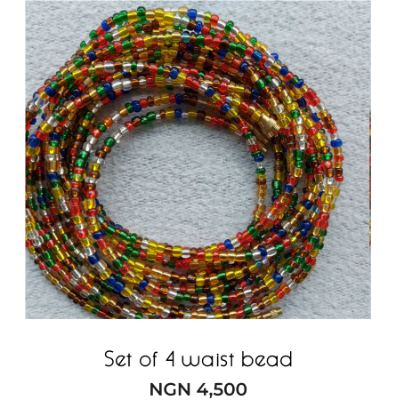
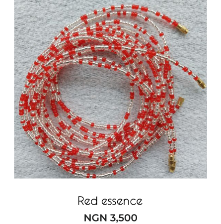
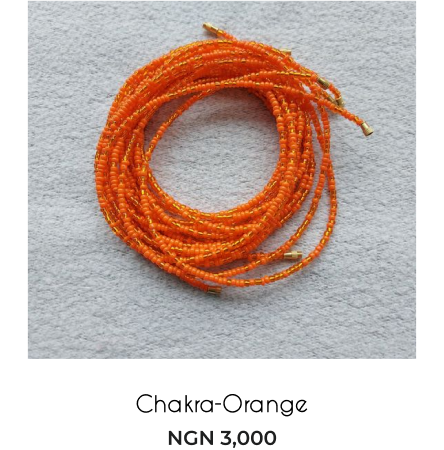
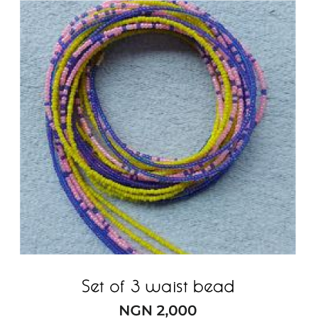
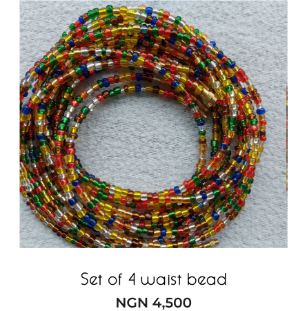

Embrace your body, embrace your confidence.
These beautiful adornments are more than just fashion accessories – they are a celebration of femininity, body positivity, and self-expression.
Shop now
How waist
beads embraces
feminine grace.


Waist beads have a rich cultural history and hold deep significance in
many African and Afro-Caribbean communities. These beautiful
adornments are more than just fashion accessories – they are a
celebration of femininity, body positivity, and self-expression.
...
Traditionally, waist beads are worn around the waist or hips, just above the belly
button. They are typically made of tiny beads, often in a variety of colors, sizes,
and materials such as glass, clay, or semi-precious stones. Each bead is carefully
threaded together to create a strand that can be customized to fit the individual's
unique measurements.
Our Product
 







Benefits Of
Waist Beads
01
Body Awareness :
Waist beads can serve as a natural waistline marker, allowing
individuals to gauge changes
in their weight and body shape. By
wearing waist beads, people become more mindful of their
bodies and
can track progress in their fitness or weight management journey.
02
Body Confidence and Empowerment:
Waist beads celebrate the natural curves and beauty of the female
body. They can enhance a
person's self-confidence and body positivity
by providing a tangible reminder of their
unique shape and
encouraging self-acceptance.
03
Symbolism and Cultural Connection:
For individuals from African or Afro-Caribbean backgrounds, waist beads
hold cultural and
symbolic significance. They can serve as a connection to
their heritage, traditions, and
ancestral roots, fostering a sense of pride and
belonging.
04
Sensuality and Intimacy:
Waist beads can enhance sensuality and intimacy, both for the wearer and
their partner. The
gentle movement and the tactile sensation of the beads
against the skin can create a
heightened sense of pleasure and intimacy.